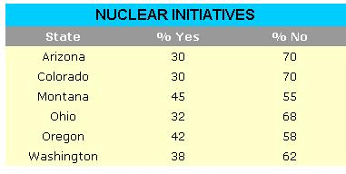

Friends Of The Earth
January/February 1977
Friends of the Earth is one of the most effective environmental groups in the world today. Although FOE publishes its own journal-a monthly tabloid called Not Man Apart?far too few of MOTHER's readers regularly see a copy of NMA . . . which is why we've agreed to publish this column, written by the FOE/ NMA staff.
THE ELECTION: WIN A FEW, LOSE A FEW
Never, since the environmental movement came into its own, have its leaders united so strongly in a presidential campaign as they did during the Carter/Ford struggle. Jimmy Carter?who espoused a good many sound environmental policies?won nearly unanimous endorsement from ecology-minded groups and individuals. And?as it turned out?the many conservationists (including much of the staff of Friends of the Earth) who took leaves of absence during October to work for the former Georgia Governor's election got what they wanted.
In House and Senate races, the conservationists' candidates fared somewhat worse. Only three of the Dirty Dozen (Talcott of California, Clancy of Ohio, and Johnson of Pennsylvania) were defeated, although 10 of the 16 candidates endorsed by the League of Conservation Voters won their contests. Perhaps the best news is that Sam Steiger (D-Ariz.)-for years one of the most consistent and outspoken opponents of environmental legislation in Congress?failed in his bid to capture the Senate seat vacated by retiring Paul Fannin.
Thanks largely to a last?minute barrage of industry sponsored TV commercials, all six nuclear initiatives voted on last November were defeated (despite the fact that opinion polls showed most of the measures doing well up to the week before the election). Here's how the voting went:
Montana's initiative was the toughest of the six: It would have banned nukes altogether. Yet, in spite of the fact that the measure's opponents spent $300,000 in campaign money to the proponents' $300, a whopping 45% of Montana's voters approved the proposition . . . by far the greatest percentage of "yes" votes cast in any state. Not enough to put the initiative over, of course, but a very respectable showing on a shoestring budget.
(As a side note, Missouri voters ratified a measure that will outlaw the present utility company practice of charging customers for "construction work in progress". Since nuclear power plant construction is more costly than the development of other types of power, the new law is expected to hamper nuke construction.)
Finally, voters in four states had a chance to decide on Oregon-style "bottle bills". Here, the outcome was more encouraging: two wins and two losses. (The :victories took place in Maine and Michigan . . . the defeats, in Massachusetts and Colorado.)
As someone once said, you win a few . . . and you lose a few.
FLOWER POWER
For years, conservationists have been doing battle with the Army Corps of Engineers over a stretch of the St. John River in Maine. The Corps wants to build a $600 million hydroelectric dam on the river . . . while opponents of the dam want to save the river for canoeing, wilderness exploration, and such.
Now, in the eleventh hour, a new warrior bas joined the fray: the furbish lousewort. Until the dam controversy flared up, the lousewort?a variety of wild snapdragon-was thought to be extinct. But lo! It's not extinct after all: 36 of the rare plants have been discovered right where the Corps wants to pave the riverbanks with concrete . . . which makes the lousewort an endangered species. And, under the provisions of the Endangered Species Act, the federal government can't legally spend money to wipe out the lousewort . . . so the dam project is?for the moment-stymied.
No doubt the situation will change, but in the meantime it's amusing to think that the mighty Corps of Engineers could be held at bay by?of all things?the furbish lousewort!
RUSSIAN NUCLEAR DISASTER
Some kind of nuclear disaster took place in Russia in the late 50's, but no one on this side of the globe knows for sure yet exactly what happened. The flap started with the publication in the British journal, New Scientist , of a report by a Soviet scientist (now living in London) who claims that a nuclear waste dump in his country exploded some years ago, killing hundreds of people and poisoning thousands more. This report was followed by an article in The Los Angeles Times , in which an unidentified American "intelligence expert" is quoted as saying that what happened was not a waste explosion, but a reactor core meltdown. (Doesn't that make you feel better?)
Maybe we'll know the whole story one day . . . maybe not. It just makes us wonder how many other disasters of similar magnitude are known to the American intelligence community . . . and how the Russians could keep such a tragedy quiet all these years.
BRIEF NOTES
Nuclear Fuels Services of West Valley, New York has thrown in the towel: They will abandon their multimillion-dollar reprocessing plant as a total loss . . . . Sweden's Social Democrats?voted out of power for the first time in 40 years?have been replaced by a three?party coalition led by Tørbjorn Fålldin, who ran an anti-nuclear campaign . . . . The Royal Swedish Academy of Sciences warns that the continued massive use of nitrogen fertilizers?which cause the release of nitrous oxide from the soil-may lead to a depletion of the ozone layer and an increase in skin cancers . . . . The U.S. Army has petitioned the Department of Defense for permission to bombard 119,580 acres of central California with sodium fluoroacetate (1080)?one of the most deadly chemicals known to man?in an attempt to reduce the ground squirrel population.
To become a member of Friends of the Earth?and receive their excellent publication, Not Man Apart , dear round-remit $20 to FOE at 529 Commercial St., San Francisco, Calif. 94111.?MOTHER.
 |
 |
|